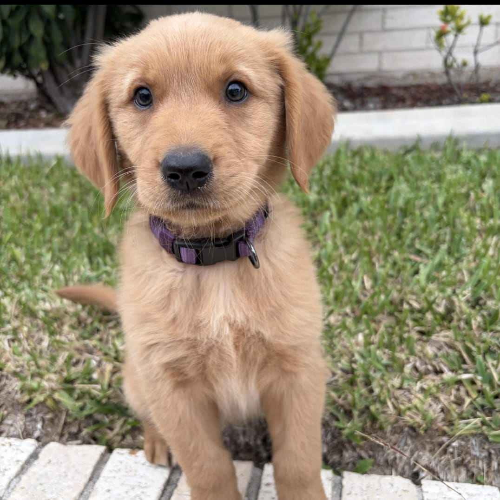
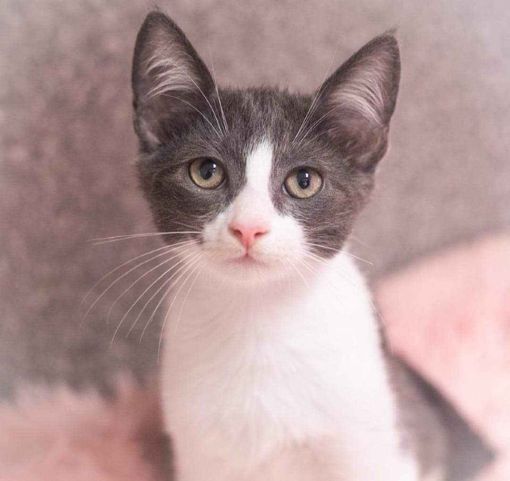
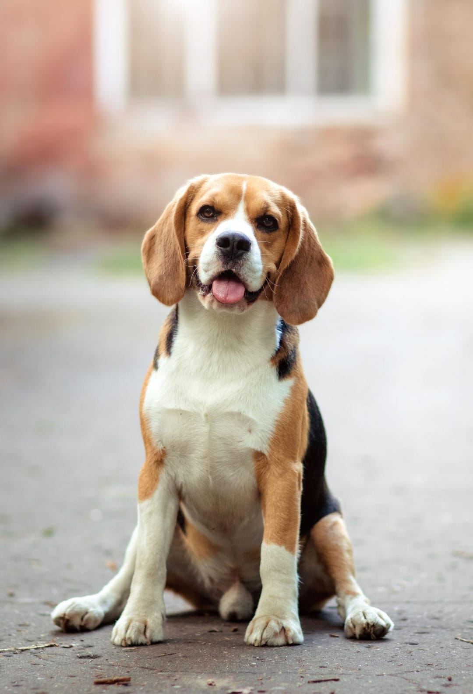
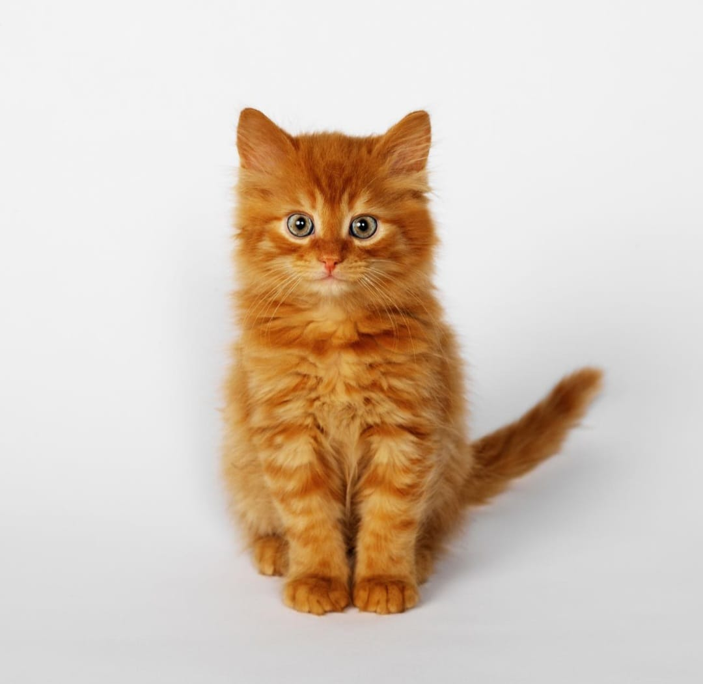
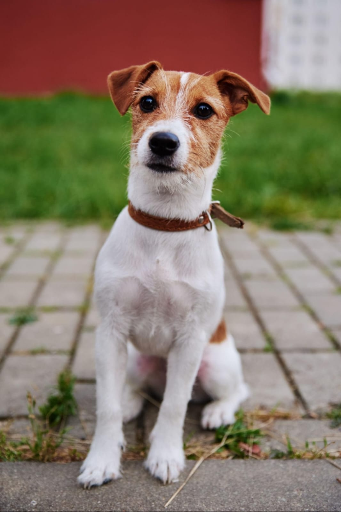

Max
HuskyAge: 3 years
Friendly and energetic. Max is looking for a caring family with time to give him attention and exercise.
Ask About Max
Get to know some of the wonderful animals currently looking for loving homes.
Age: 3 years
Friendly and energetic. Max is looking for a caring family with time to give him attention and exercise.
Ask About Max
Age: 11 months
Gentle and affectionate. Luna would suit a calm home where she can feel safe and comfortable.
Ask About Luna
Age: 2 years
Playful and loving. Rocky needs a responsible adopter who can provide care and companionship. Ask About Rocky
Age: 2 years
Buddy is a friendly and energetic dog who loves playing outdoors and meeting new people.
Ask About Buddy
Age: 8 months
Milo is a curious and affectionate kitten who enjoys exploring and receiving attention.
Ask About Milo
Age: 3 years
Daisy is a cheerful and loving companion who enjoys walks and spending time with people.
Ask About Daisy
Age: 1 year
Oliver is a gentle and cuddly cat who loves relaxing in sunny spots and playing with toys.
Ask About Oliver
Age: 4 years
Charlie is an adventurous and intelligent dog who loves outdoor activities and exploring.
Ask About CharliePotential adopters should submit an enquiry and provide the required information. The organisation can then assess whether the animal and adopter are a suitable match.
Start an Enquiry